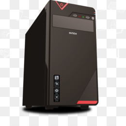
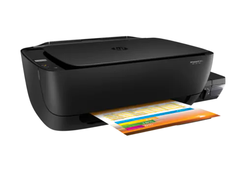

<!--
  Generated template for the BuscarrepPage page.

  See http://ionicframework.com/docs/components/#navigation for more info on
  Ionic pages and navigation.
-->
<ion-header>

 <!-- <ion-navbar  hideBackButton="true">-->
    <ion-navbar>
    <ion-title>Buscar Reparación</ion-title>
  </ion-navbar>

</ion-header>


<ion-content padding>
  
<ion-list>
    <ion-item>
      <ion-input  placeholder="Que buscas?"   [(ngModel)]="nroDeOrden" id="nrodeorden"></ion-input>
    </ion-item>
</ion-list>
<button ion-button full  (click)="getBuscarPorNroOrden()">BUSCAR</button>

<br />
<ion-list>
    <ion-item-group>
      <ion-item-divider color="light">Resultado</ion-item-divider>
      <ion-list>
         <button ion-item  *ngFor="let dato of datos" (click)="goEditar(dato)"> 
               <ion-icon name="laptop" item-start></ion-icon>
              <h2><b>Código:</b> {{dato.codigo}}</h2>
              <h4><b>Estado:</b> {{dato.estado}}</h4>
              <h4><b>Fecha:</b> {{dato.fechaEntrada}}</h4>
              <h4><b>Cliente:</b> {{dato.cliente.nombre}} </h4>
              <h4> <b>Tel: </b> {{dato.cliente.telefono}} - <b>Cel: </b> {{dato.cliente.celular}}</h4>
              <h4><b>Equipo:</b> {{dato.equipo.tipo}}, Marca: {{dato.equipo.marca}}, Modelo: {{dato.equipo.modelo}} </h4>
       </button>
      </ion-list>  
      <!-- <ion-list>
          <ion-item  *ngFor="let dato of datos" (click)="goEditar(dato)">
            <ion-avatar item-start>
              
              
              
              
            </ion-avatar>
            <h2>Código {{dato.codigo}}</h2>
            <h4>Cliente {{dato.cliente.nombre}}</h4>
            <p>{{dato.equipo.tipo}}, Marca: {{dato.equipo.marca}}, Modelo: {{dato.equipo.modelo}} </p>
          </ion-item>
        </ion-list> -->

    </ion-item-group>
</ion-list>
 


</ion-content>
